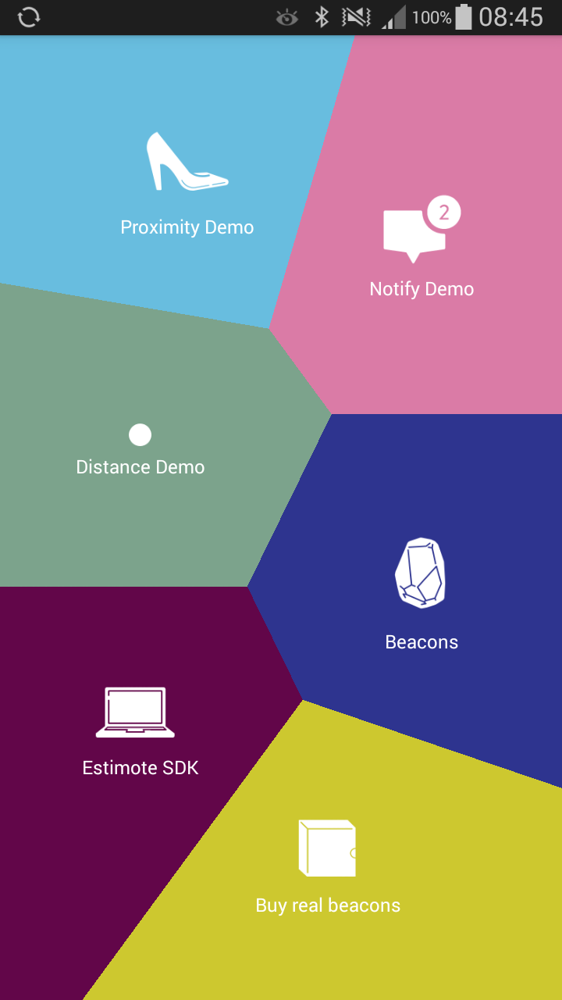
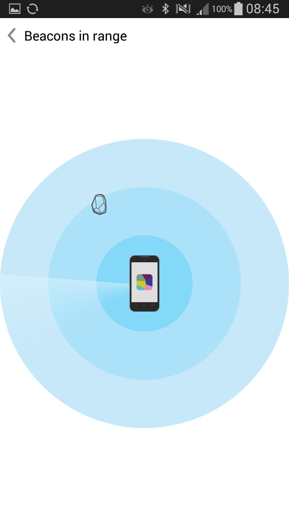
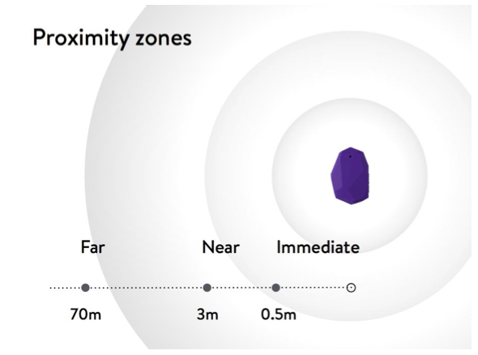
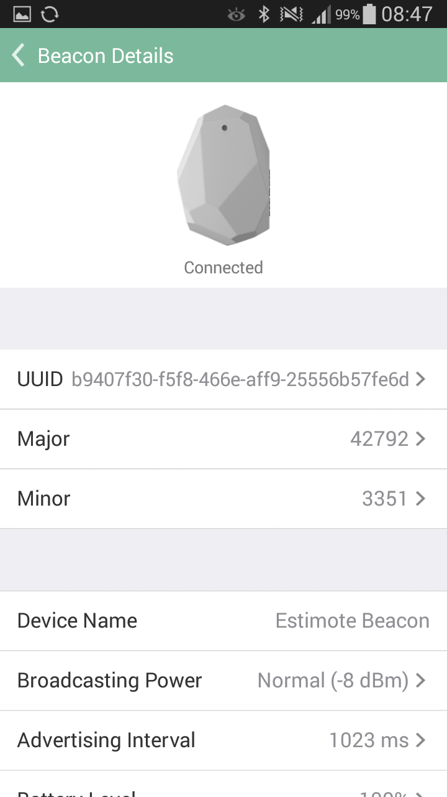
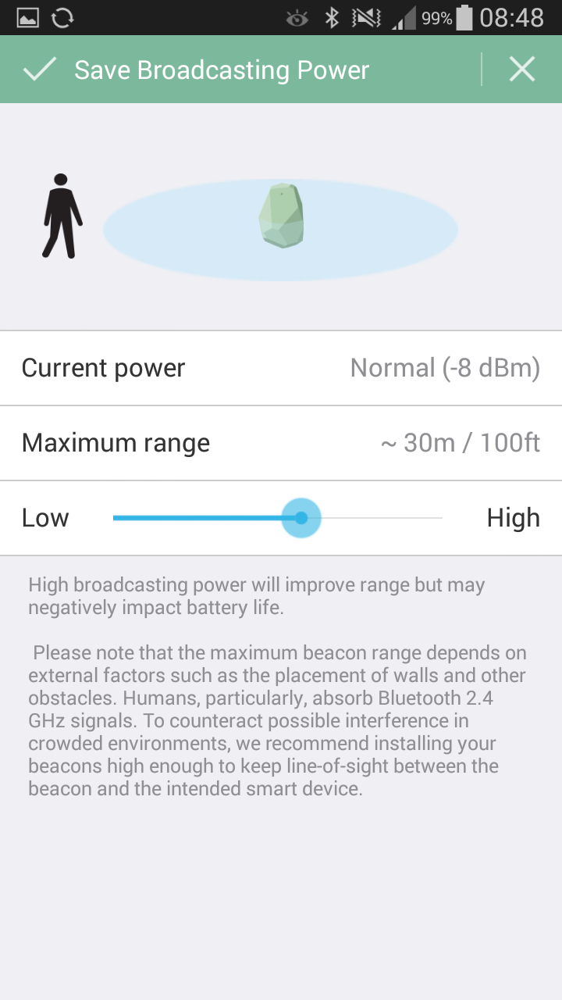
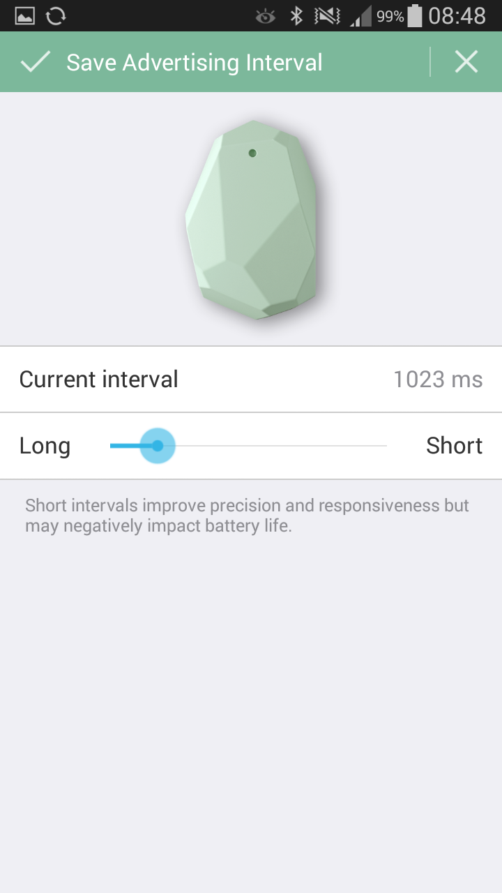

## Internet of Things
EESTEC and Telephoners workshop
** You can follow the presentation on **
[http://anteq.github.io/eestec-beacon-workshops](http://anteq.github.io/eestec-beacon-workshops)
## Four-day agenda
* Introduction to Internet of Things
* Beacons - why they are awesome!
* Example 0 - get to know Estimote API
* Example 1 - "hot and cold" game
* Build your own app!
## Introduction to Internet of Things
Internet of Things ...
... is a network of interconnected things ...
... embedded with electronics and sensors ...
... which enables them to achieve greater value and service ...
... by exchanging and analysing data.
## Example things


The first appliance, (…) , was a Coke machine at Carnegie Melon University in the early 1980s. The programmers could connect to the machine over the Internet, check the status of the machine and determine whether or not there would be a cold drink awaiting them, should they decide to make the trip down to the machine.
Smart+Connected Cities
Large scale experiment by Cisco
## Beacons## Estimote beacons
## Your phone is always with you,
## smart beacons give it CONTEXT.
## Let's run sample Estimote app...

## Use 1: monitoring beacons in range
Apps can subscribe in the operating system to constantly listen for particular identifiers.
When the phone comes into the range of a beacon, the app is notified about this, even if the phone is locked or the app is not currently running.
Try out ** Notify ** demo.
## Use 2: approx. distance to beacon
The smartphone is continuously monitoring the strength of the signal (or RSSI), which is compared to three predefined ranges that divide the area around a beacon into three zones - far, near and immediate.
Try out ** Distance ** and ** Proximity ** demo.


## Beacon configuration
You can modify some of the beacons' parameters:
* identifiers (UUID, major and minor)
* broadcasting power
* advertising interval



## Coding: hot and cold game
## Rules
* Divide into teams of three
* You can code on one computer
* We're writing this one together – step by step
* Shout if you can't catch up – we'll help
* Don't upload app onto device until we say so